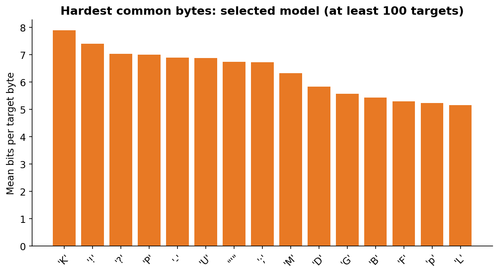
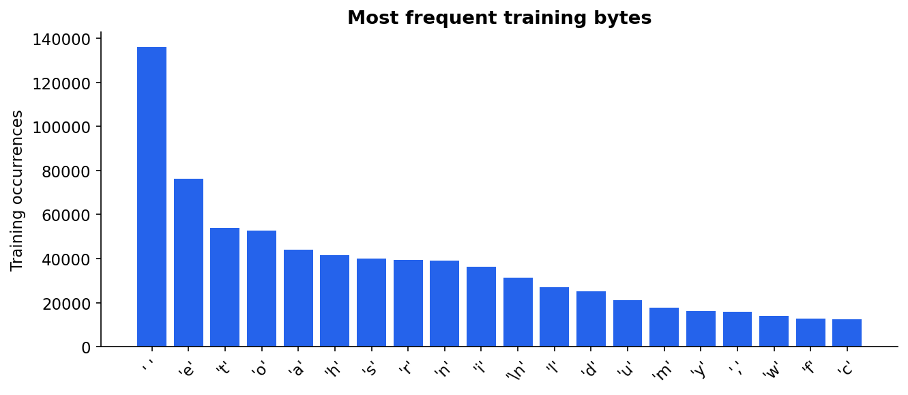
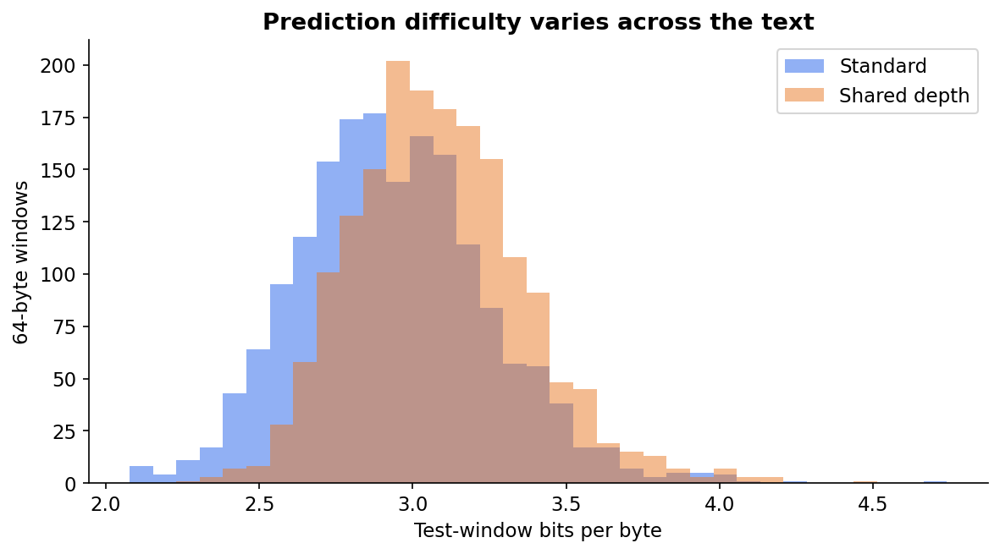
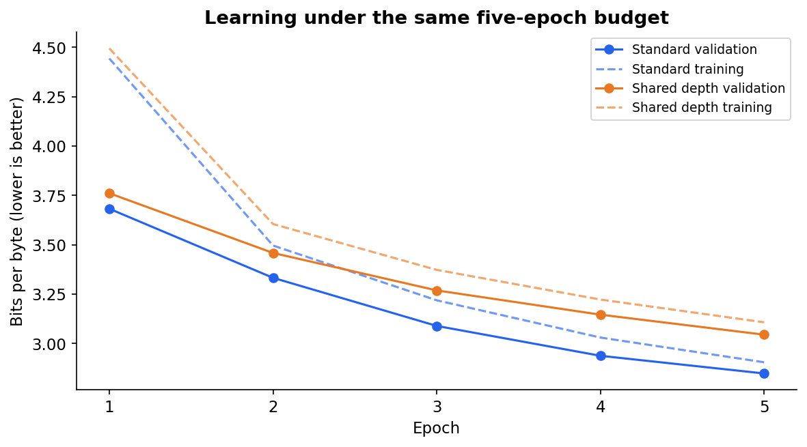
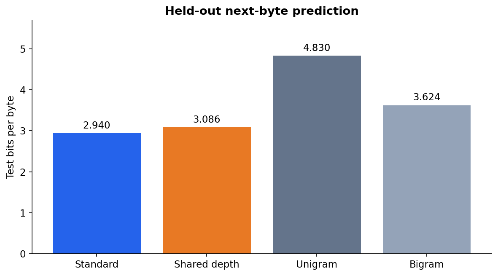
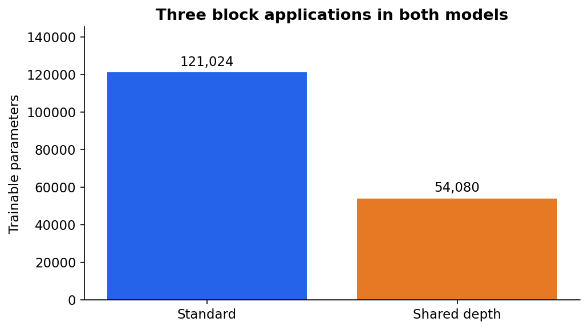

Automated study; human review pending.
Selected: Standard Transformer. Parameter reduction: 55.3%. Shared minus standard test BPB: +0.1458.
| model | nll | bits_per_byte | perplexity | accuracy |
|---|---|---|---|---|
| Standard Transformer | 2.0377 | 2.9398 | 7.6732 | 0.4062 |
| Shared-depth Transformer | 2.1388 | 3.0856 | 8.4892 | 0.3749 |
| Unigram baseline | 3.3479 | 4.8300 | 28.4429 | 0.1490 |
| Bigram baseline | 2.5122 | 3.6243 | 12.3315 | 0.2648 |
Five fixed epochs; one seed; contiguous 80/10/10 split; no pretrained weights. See README.md for full protocol and limitations.





